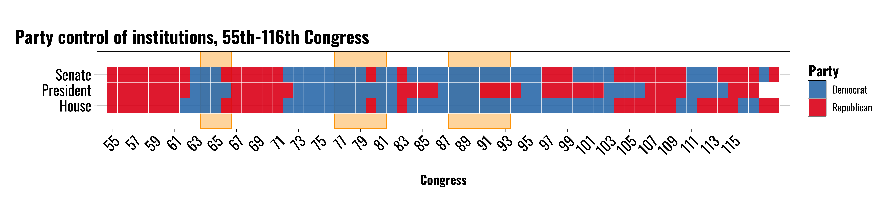
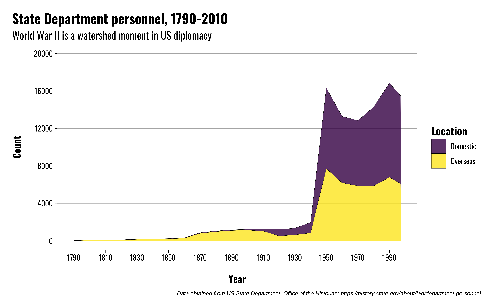
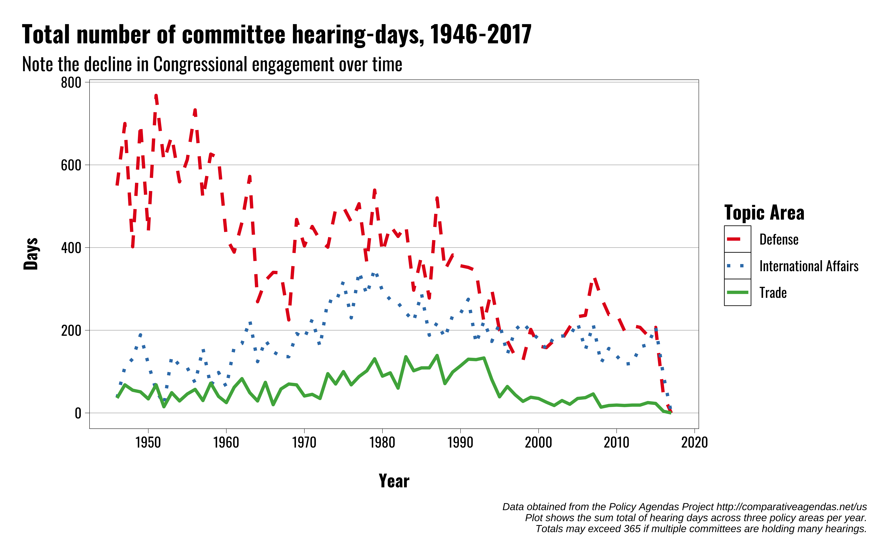

US Foreign Policy
Congress and the Presidency
Michael Flynn
Professor
Department of Political Science
011C Calvin Hall
meflynn@ksu.edu
2025-09-07
Lecture Overview
Traditional views of Congress and the Presidency
Institutional powers
Constraining the president
Traditional Views
Traditional Views
President
Enjoys primacy in foreign policymaking
Elected by one “district”
Represents the whole country
Congress
Unimportant in foreign policymaking
Agglomeration of narrow views
Legislators represent narrow constituencies
Traditional Views
Conflicting institutions
Struggle between President and Congress over control of foreign policymaking
WWI
WWII
Post-Vietnam
Institutional Powers
Institutional Powers
The Constitutional Convention did not create a system of separated powers—it created a government of separated institutions sharing powers. —Richard Neustadt
Institutional Powers
| Power | President | Congress |
|---|---|---|
| Appointments | Presidents appoint executive branch officials | Advice and consent of the Senate |
| International Agreements | Negotiate and implement international agreements | Advice and consent of the Senate |
| War and the Use of Force | Commander-in-Chief of military forces | Raise and support military forces, declare war, oversight |
Institutional Powers
| Power | President | Congress |
|---|---|---|
| Appointments | Presidents appoint executive branch officials | Advice and consent of the Senate |
| International Agreements | Negotiate and implement international agreements | Advice and consent of the Senate |
| War and the Use of Force | Commander-in-Chief of military forces | Raise and support military forces, declare war, oversight |
Appointments
Appointments
Appointments in two key areas:
Foreign policy bureaucracy
Executive Office of the President

| Senate Approval Required | No Senate Approval Required |
|---|---|
| Secretary of State | Assistant to the President for National Security Affairs |
| Secretary of Defense | Chief of Staff |
| Secretary of the Treasury | Director of State Department Policy Planning Staff |
| Director of the Central Intelligence Agency | Deputy Director of Central Intelligence Agency |


International Agreements
Institutional Powers
| Power | President | Congress |
|---|---|---|
| Appointments | Presidents appoint executive branch officials | Advice and consent of the Senate |
| International Agreements | Negotiate and implement international agreements | Advice and consent of the Senate |
| War and the Use of Force | Commander-in-Chief of military forces | Raise and support military forces, declare war, oversight |
International Agreements
Two types:
Treaties
Executive agreements
International Agreements
Treaties
Both Congress and the President play important parts
Executive negotiates treaties
Two-thirds of senators present must vote in favor
President ratifies the treaty (not the Senate)
What about the House of Representatives?
International Agreements
Executive Agreements
Similar process, but different mechanics
Two key types:
“Sole Executive Agreement”
“Congressional-executive agreements”
Negotiated by the president and/or bureaucratic agents
Can be just as binding
International Agreements
Example: Free trade
Reciprocal Trade Agreement Act of 1934
Congressional delegation of “fast track” authority
To right: Secretary of State Cordell Hull
International Agreements
Strategic Arms Limitation Talks (SALT)
Anti-Ballistic Missile Treaty (ABM Treaty)
Executive agreement limiting nuclear weaponry
To right: President Nixon and Soviet Premier Leonid Brezhnev shaking hands after signing the SALT I agreement.
International Agreements
Other Stuff?
Joint Comprehensive Plan of Action (JCPOA / aka the Iran Nuclear Deal)
Not a treaty
Also not an executive agreement
So what is it?
A “political agreement”
Not legally binding
War and the Use of Force
War and the Use of Force
| Power | President | Congress |
|---|---|---|
| Appointments | Presidents appoint executive branch officials | Advice and consent of the Senate |
| International Agreements | Negotiate and implement international agreements | Advice and consent of the Senate |
| War and the Use of Force | Commander-in-Chief of military forces | Raise and support military forces, declare war, oversight |
War and the Use of Force
The president enjoys significant advantages
Institutional powers
First-mover advantage
Information asymmetries
Technological change


War and the Use of Force
Authorization for the Use of Military force (2001 AUMF)
Drafted in response to September 11 attacks
Grants broad authority to the president to use military force
Section 2, Subsection (a): That the President is authorized to use all necessary and appropriate force against those nations, organizations, or persons he determines planned, authorized, committed, or aided the terrorist attacks that occurred on September 11, 2001, or harbored such organizations or persons, in order to prevent any future acts of international terrorism against the United States by such nations, organizations, or persons.
War and the Use of Force
Authorization for the Use of Military Force Against Iraq Resolution of 2002 (2002 AUMF)
Expresses Congress’ support of presidential efforts to
Enforce UN Security Council resolutions regarding Iraq
Pressure UN Security Council to ensure Iraq complies with UN Security Council resolutions
Grants broad authority to use military force
Notably ties in to the 2001 AUMF and the aim of targeting those “nations, organizations, or persons who planned, authorized, committed, or aided the terrorist attacks that occurred on September 11, 2001”
War and the Use of Force
2001 and 2002 AUMFs have been used to justify a wide range of military operations in dozens of countries under three presidents.
Prominent examples include:
2014 operations against ISIS in Iraq and Syria
2016 operations against al-Shabab in Somalia
2019 Killing of Maj. Gen. Qasem Soleimani of Iran’s Quds Force
War and the Use of Force
War Powers Resolution of 1973
Regular consulations, “in every possible instance,” with Congress prior to deploying troops
Report to Congress within 48 hours of troop deployment explaining cause and justification for deployment
Time limits on deployment of US troops
Empowers Congress to end US troop deployments abroad by concurrent resolution
War and the Use of Force
The President enjoys several advantages, but what about Congress?
Tenure
Expertise
Legislative and budgetary powers
Oversight powers
Approval of appointments
Public outreach
